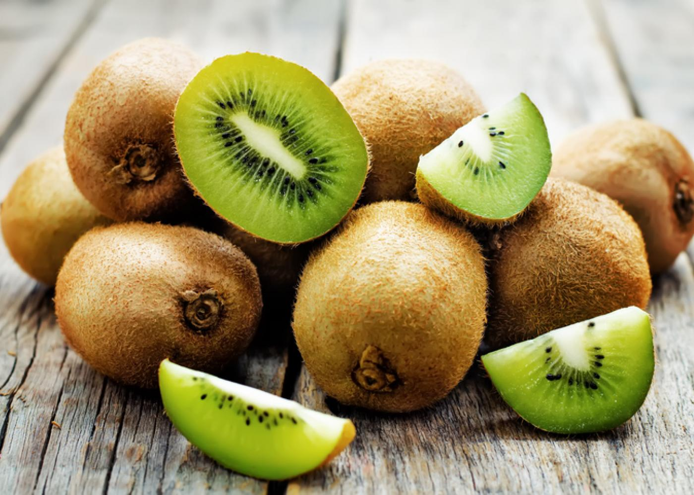

Confiture rapide de kiwis
La plus grande chose exotique de notre enfance était le kiwi. Et même à l'âge adulte, ces drôles de fruits verts sont très appréciés de la plupart des gens. Mais en plus de son goût agréable, le kiwi possède également un ensemble impressionnant de propriétés utiles. A propos d'eux dans notre matériel ! La patrie historique du kiwi est la Chine, c'est pourquoi on l'appelle parfois la groseille à maquereau chinoise. Mais de nos jours, les plantations de kiwis sont situées dans de nombreux pays. Par exemple, ces fruits sont importés d'Italie, d'Espagne et de Grèce en Ukraine. La plupart des kiwis sont de l'eau (environ 84%). De plus, il contient des protéines (1%), des graisses (moins de 1%), des glucides (10%), ainsi que des fibres alimentaires, de l'acide nicotinique, des mono- et disaccharides. Le kiwi est pauvre en calories, mais il est très riche en vitamines et oligo-éléments utiles. Et le plus grand avantage est qu'ils ne sont pas détruits par la conservation, en raison de l'acidité du kiwi. Bienfaits pour la santé des Kiwis Source de vitamine C Si vous pensez que les citrons et les oranges sont les principales sources de vitamine C, détrompez-vous. En fait, les kiwis contiennent 154% de vitamine C pour 100 g, soit presque deux fois plus que les citrons et les oranges. La vitamine C agit comme un puissant antioxydant, éliminant les radicaux libres qui peuvent causer l'inflammation ou le cancer. Ils aident également le système immunitaire à lutter contre les agents pathogènes nocifs.
Achetez maintenant!